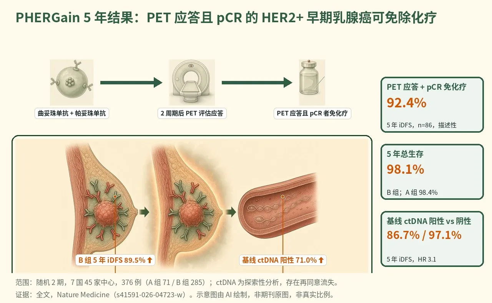

PHERGain 5年随访：去化疗策略iDFS 89.5%
PHERGain（NCT03161353）在HER2阳性早期乳腺癌中评估一种去化疗策略：先用曲妥珠单抗联合帕妥珠单抗，根据PET早期应答和术后病理完全缓解决定是否补充化疗。中位随访5.6年，B组（n=267）5年iDFS为89.5%（85.7–93.4）；PET应答且达pCR、未接受化疗者（n=86）5年iDFS为92.4%，仅1例远处复发，但该亚组结果只能作描述性解读。基线ctDNA检出率71.0%，可检出ctDNA与较差的无浸润性疾病生存相关。

- HER2+早期乳腺癌376例入组
- 曲帕双靶后PET评估早期应答
- PET应答且pCR者免除化疗
- B组5年iDFS 89.5%
示意图概括了 PHERGain B 组的分层路径：先给曲妥珠单抗 + 帕妥珠单抗，PET 早期应答且术后达 pCR 者免除化疗，其余患者补充化疗。
研究背景与待解问题
新辅助化疗联合曲妥珠单抗和帕妥珠单抗双靶是 II–III 期 HER2 阳性乳腺癌的标准方案，pCR 率高且与长期预后良好相关。但并非每位患者都需要化疗，问题在于如何在治疗早期识别可安全免除化疗的人群。
PHERGain 此前报告，按 PET 应答和 pCR 调整的去化疗策略在 B 组的 3 年 iDFS 为 94.3%（摘要数据）。本文回答的是：随访延长到 5 年，这一策略的疗效是否仍可接受，ctDNA 能否进一步帮助个体化治疗。
研究设计
入组标准为 HER2 阳性、I–IIIA 期、可手术、肿瘤≥1.5 cm 的女性乳腺癌。患者随机进入 A 组（化疗 + HP）或 B 组（HP ± 内分泌治疗）。B 组在 2 周期后行 18F-FDG-PET 评估，应答者继续 HP 至手术；无应答者或术后未达 pCR 者接受化疗。
完成 3 年随访者需重新签署知情同意进入延长期：A 组 55 例中 49 例（89.1%）、B 组 250 例中 215 例（86.0%）同意。ctDNA 分析在基线、第 3 周期第 1 天（C3D1）和术前三个时点采集血浆，共 932 份样本，801 份（85.9%）测序成功，采用非肿瘤知情型检测。
核心结果
5 年生存
B 组手术人群 267 例中 26 例（9.7%）在术后 5 年内发生侵袭性疾病事件或死亡，5 年 iDFS 89.5%（95% CI 85.7–93.4）。iDFS 事件以远处复发（5.2%）和第二原发非乳腺癌（1.5%）为主。B 组 5 年远处无病生存（DDFS）92.7%，5 年 OS 98.1%，EFS 86.2%。
PET 应答、达 pCR 且未接受化疗的 86 例患者，5 年 iDFS 92.4%（95% CI 86.7–98.5），共 6 例 iDFS 事件，其中远处复发 1 例（1.2%）。A 组 5 年 iDFS 与 DDFS 均为 96.7%，5 年 OS 98.4%。
基线 ctDNA 与 pCR
基线 ctDNA 检出率 71.0%（204/288），随分期升高：I 期 33.3%、III 期 93.2%；淋巴结阳性者 87.8%，阴性者 55.0%。基线 ctDNA 状态与 pCR 无显著关联（41.7% 对 38.1%）。C3D1 时 ctDNA 清除者 pCR 率更高（48.4% 对 22.0%）；术前仍可检出 ctDNA 的 28 例患者均未达 pCR。
ctDNA 与 5 年 iDFS
基线可检出 ctDNA 者 5 年 iDFS 较低（86.7% 对 97.1%，HR 3.1，95% CI 1.0–9.8）；C3D1 可检出者 77.5% 对 94.4%（HR 4.3）。调整分期和淋巴结状态后，基线（HR 2.9）和 C3D1（HR 3.6）ctDNA 仍为独立预测因素，术前时点则不再显著。
机制解读
论文所证实的： 在 5 年随访下，PET 引导、按 pCR 调整的 HP 双靶策略使 B 组约三分之一患者完全未接受化疗，B 组整体 5 年 iDFS 为 89.5%。早期 ctDNA 清除与 PET 应答高度一致（PET 应答者 90.5% 对无应答者 56.1%），并与更高 pCR 率相关。
作者推测： iDFS 从 3 年到 5 年的下降与 HER2 阳性早期乳腺癌持续存在的复发风险一致。作者认为 ctDNA 可与 PET 互补，用于识别可安全降阶梯的患者，或提示需要加强治疗的高危人群，但这需要前瞻性验证后才能用于临床决策。
局限与不确定
- 2 期、非比较性设计，A、B 组按 1:4 分配，不能做正式头对头比较；B 组远处复发数值上多于 A 组（5.2% 对 3.2%），需谨慎解读。
- PET 应答、pCR、未化疗等亚组是随机后按疗效形成的，相关估计为探索性、描述性，不能视为免除化疗的因果效应。
- 相当比例患者未重新同意进入延长期而被删失，可能引入失访偏倚；延长期随访以临床评估为主，可能低估亚临床事件。
- 未达 pCR 者未使用 T-DM1 辅助治疗；ctDNA 分析为探索性，部分时点样本缺失，且使用非肿瘤知情型检测。
临床/产业意义
PHERGain 5 年数据为 HER2 阳性早期乳腺癌的“去化疗”提供了较长期的证据：对 PET 早期应答并达 pCR 的患者，仅用双靶治疗的 5 年 iDFS 达 92.4%。这一结果支持继续探索以影像和分子标志物指导的个体化降阶梯策略；ctDNA 有望与 PET 联合，用于更精细的风险分层，但在纳入常规实践前仍需前瞻性随机试验验证。